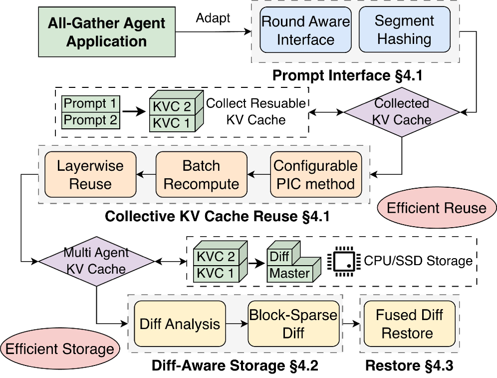

Why it matters왜 중요한가
For multi-agent systems, GPU memory — not compute — is the wall. Each agent keeps a KV cache that lives across rounds, and all of them must coexist at once.
멀티에이전트 시스템에서 벽은 연산이 아니라 GPU 메모리다. 각 에이전트는 라운드 너머까지 유지되는 KV 캐시를 갖고, 그것들이 전부 동시에 메모리에 공존해야 한다.
The paper's motivating measurement is stark: on one A100-80GB serving Qwen2.5-14B, a 10-session multi-agent workload (250 subrequests) consumes 41.5 GiB of KV cache — 99.3% of the pool and hits a P99 latency of 136 s, while 250 independent requests with the same total work use only 24.8 GiB (59.2%). The difference is pure redundancy: independent requests free their cache when done, but multi-agent caches must persist across rounds, and each one redundantly re-stores the same shared context. Existing systems can't see this — vLLM's prefix caching breaks the moment private histories make prompts diverge from position zero, and even position-independent caching (PIC) methods like CacheBlend re-do the same reuse work N separate times and still store N full dense copies. TokenDance's insight: the redundancy is a property of the round, so optimize the round.
논문의 동기 측정은 강렬하다: Qwen2.5-14B를 서빙하는 A100-80GB 한 장에서, 10세션 멀티에이전트 워크로드(서브요청 250개)는 KV 캐시 41.5 GiB — 풀의 99.3%를 쓰고 P99 지연 136초에 도달한다. 반면 같은 총량의 독립 요청 250개는 24.8 GiB(59.2%)만 쓴다. 차이는 순수한 중복이다: 독립 요청은 끝나면 캐시를 반납하지만, 멀티에이전트 캐시는 라운드를 가로질러 유지되어야 하고 각각이 똑같은 공유 맥락을 중복 저장한다. 기존 시스템은 이를 못 본다 — vLLM의 prefix caching은 사적 히스토리 때문에 프롬프트가 0번 위치에서 갈리는 순간 깨지고, CacheBlend 같은 위치-독립 캐싱(PIC)조차 같은 재사용 작업을 N번 따로 하고 여전히 N개의 온전한 dense 복사본을 저장한다. TokenDance의 통찰: 중복은 라운드의 속성이니, 라운드를 최적화하라.

By the numbers핵심 숫자
Core results핵심 결과
| System | Max agents @ QPS=16 | Per-agent KV storage | Prefill reuse |
|---|---|---|---|
| vLLM (prefix caching) | 2 | full dense | per-request |
| CacheBlend (per-request PIC) | 4 | full dense | per-request · N passes |
| TokenDance | 8 | block-sparse diff (11–17× smaller) | collective · 1 pass |
The advantage compounds with scale: at 1–2 agents all systems are similar (little redundancy), but as agent count rises the baselines pay linearly growing reuse and storage costs while TokenDance pays each shared cost once. The gap is even larger on the 14B model, where each agent's cache is ~2× bigger — TokenDance compresses Mirrors to ~6% of full size, removing the model-size storage penalty.
이점은 규모와 함께 누적된다: 에이전트 1–2개에선 (중복이 적어) 모든 시스템이 비슷하지만, 수가 늘수록 베이스라인은 선형으로 커지는 재사용·저장 비용을 치르고 TokenDance는 공유 비용을 한 번만 치른다. 격차는 14B 모델에서 더 크다 — 각 에이전트 캐시가 약 2배 큰데 TokenDance는 Mirror를 원본의 약 6%로 압축해 모델 크기에 따른 저장 페널티를 없앤다.
In one diagram한 장의 그림
The three pieces that make it work작동을 가능케 한 세 조각
Collective KV Cache reuse (KV Collector)
PIC methods recover shared blocks at any offset, but repeat the work — RoPE rotation and "important-position" selection — once per agent. The KV Collector groups compatible same-round requests, concatenates their Q/K tensors, fires one batched RoPE and one batched key-diff pass on a check layer, finds the diverging positions for the whole group at once, and refreshes only those. Cost scales with differing positions, not agent count.
PIC는 임의 오프셋의 공유 블록을 복원하지만 그 작업(RoPE 회전, "중요 위치" 선택)을 에이전트마다 반복한다. KV Collector는 호환되는 같은-라운드 요청을 묶어 Q/K 텐서를 이어붙이고, check 레이어에서 배치 RoPE 한 번과 배치 key-diff 한 번으로 그룹 전체의 발산 위치를 동시에 찾아 그 위치만 갱신한다. 비용은 에이전트 수가 아니라 차이 나는 위치 수에 비례한다.
Diff-Aware Storage (Master-Mirror)
After reuse, sibling caches differ at only 10–20% of positions. One cache becomes the Master (lowest deviation); every other is a Mirror stored as a block-sparse K/V diff — just the touched block indices and their corrected values. On the GenerativeAgents round only ~53 (7B) / ~60 (14B) of 500–700 blocks differ, giving 11.2× / 17.5× compression. Reads return a lightweight mirror object; materialization is deferred.
재사용 후 형제 캐시들은 위치의 10–20%만 다르다. 한 캐시가 Master(편차 최소)가 되고, 나머지는 블록-희소 K/V diff로 저장되는 Mirror다 — 바뀐 블록 인덱스와 보정값만 기록. GenerativeAgents 라운드에서 500–700 블록 중 약 53개(7B)/약 60개(14B)만 다르며, 11.2×/17.5× 압축을 준다. 읽기는 가벼운 mirror 객체를 반환하고 실체화는 미룬다.
Fused Diff Restore
Compression is useless if restore is slow. A naive path would load the full Master, copy it, then overwrite — an extra dense round trip. TokenDance instead applies the sparse diff inside the layerwise GPU transfer that already moves cache data: ping-pong buffers load Master chunks while the other buffer is corrected in place, RoPE-recovered, and written to paged memory. Blocks identical to the Master bypass correction entirely. 27% faster restore than dense at 10 agents.
복원이 느리면 압축은 무용지물이다. 순진한 방식은 Master 전체를 적재·복사 후 덮어쓴다 — dense 왕복이 더해진다. TokenDance는 대신 캐시 데이터를 이미 옮기는 레이어별 GPU 전송 안에서 희소 diff를 적용한다: 핑퐁 버퍼가 Master 청크를 적재하는 동안 다른 버퍼는 제자리에서 보정·RoPE 복원되어 paged 메모리에 쓰인다. Master와 동일한 블록은 보정을 건너뛴다. 10 에이전트에서 dense 대비 복원 27% 빠름.
How it works어떻게 작동하나
- Make the round visible.라운드를 보이게. The application inserts a reserved
<TTSEP>separator between logical blocks (private history vs shared outputs). The runtime swaps fixed-size chunk hashing for segment-based hashing, so a shared block is recognized regardless of its absolute position. 앱이 논리 블록(사적 히스토리 vs 공유 출력) 사이에 예약 토큰<TTSEP>를 넣는다. 런타임은 고정 크기 청크 해싱을 세그먼트 기반 해싱으로 바꿔, 절대 위치와 무관하게 공유 블록을 인식한다. - Group & collectively reuse.묶어서 집합 재사용. The KV Collector groups same-round requests that meet execution constraints and drives them in lockstep, layerwise — one batched RoPE and one batched key-diff pass identify the important positions for every agent at once; only those are recomputed. KV Collector가 실행 제약을 만족하는 같은-라운드 요청을 묶어 레이어별로 보조를 맞춰 구동한다 — 배치 RoPE 한 번과 key-diff 한 번이 모든 에이전트의 중요 위치를 동시에 찾고, 그것만 재계산한다.
- Pick a Master, diff the rest.Master 선정, 나머지는 diff. The reuse plan names the lowest-deviation cache as Master; each remaining cache is serialized as a block-sparse K/V diff (shared block-index list across K and V to shrink metadata). 재사용 계획이 편차 최소 캐시를 Master로 지정하고, 나머지 캐시는 블록-희소 K/V diff로 직렬화된다(메타데이터 축소를 위해 K·V가 블록 인덱스 목록 공유).
- Restore inside the transfer.전송 안에서 복원. At decode, ping-pong buffers load the Master while merging each Mirror's diff in place and recovering RoPE positions, writing straight to paged KV cache — no separate dense Mirror is ever built. 디코딩 시 핑퐁 버퍼가 Master를 적재하면서 각 Mirror의 diff를 제자리 병합하고 RoPE 위치를 복원해 paged KV 캐시에 바로 쓴다 — 별도의 dense Mirror는 만들지 않는다.
- Stay drop-in.교체형 유지. The collective amortization is backend-agnostic (the prototype uses CacheBlend's selective recomputation), and per-cache eviction/quantization (H2O, KIVI) can still be layered on top — TokenDance removes cross-cache redundancy first. 집합적 분산은 백엔드 독립적이고(프로토타입은 CacheBlend의 선택적 재계산 사용), 캐시별 eviction/quantization(H2O, KIVI)을 그 위에 얹을 수 있다 — TokenDance는 캐시 간 중복을 먼저 제거한다.
What to take away그래서, 가져갈 것
Optimize the round, not the request. Treating the All-Gather round as the unit turns N near-identical caches into one Master plus tiny diffs and one shared reuse pass — 2.7× agent capacity, 2.3× lower latency, 94% less storage on a single A100.
요청이 아니라 라운드를 최적화하라. All-Gather 라운드를 단위로 보면 거의 동일한 캐시 N개가 Master 하나 + 작은 diff들과 공유 재사용 한 번이 된다 — A100 한 장에서 에이전트 용량 2.7배, 지연 2.3배 감소, 저장 94% 절감.
It's orthogonal and (mostly) lossless: TokenDance dedupes across sibling caches, so single-cache quantization/eviction still stacks on top, and its output is byte-identical to the PIC method it wraps — the redundancy was structural, not approximate.
이것은 직교적이고 (대체로) 무손실이다: TokenDance는 형제 캐시들 사이를 중복 제거하므로 단일 캐시 quantization/eviction을 그 위에 쌓을 수 있고, 출력은 감싼 PIC와 바이트 단위로 동일하다 — 중복은 근사가 아니라 구조적인 것이었다.
Bigger models win more: 14B compresses 17.5× vs 11.2× at 7B because cache tensors grow per token while the number of differing blocks stays ~constant — deduplication erases the model-size storage penalty.
큰 모델이 더 이득이다: 14B는 7B의 11.2× 대비 17.5× 압축된다 — 토큰당 캐시 텐서는 커지지만 다른 블록 수는 거의 일정하기 때문 — 중복 제거가 모델 크기에 따른 저장 페널티를 지운다.